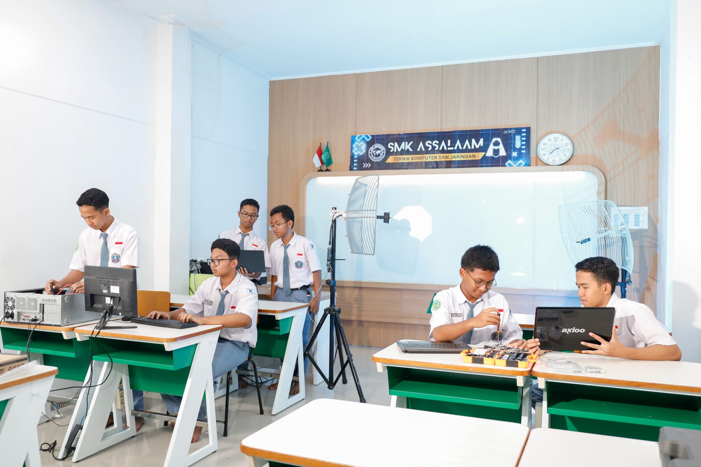
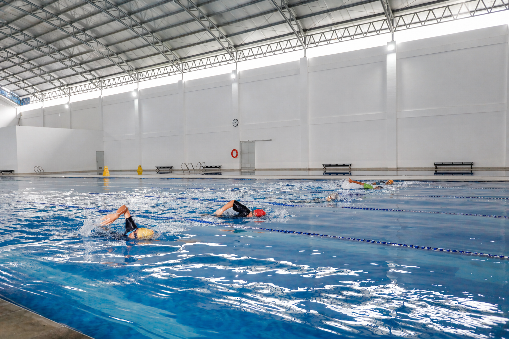
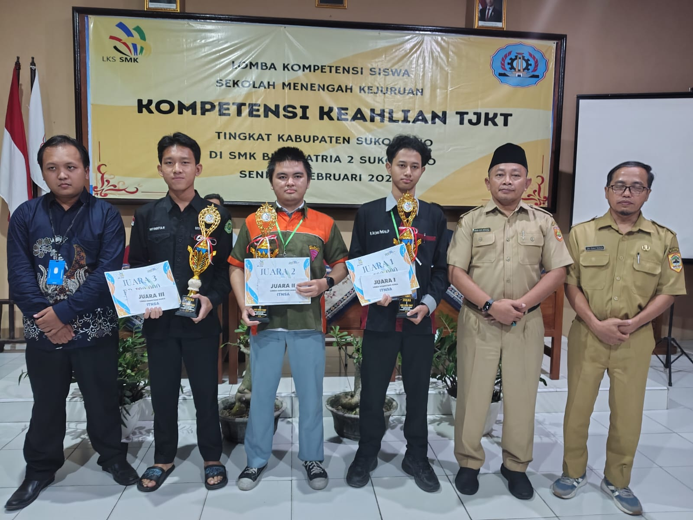
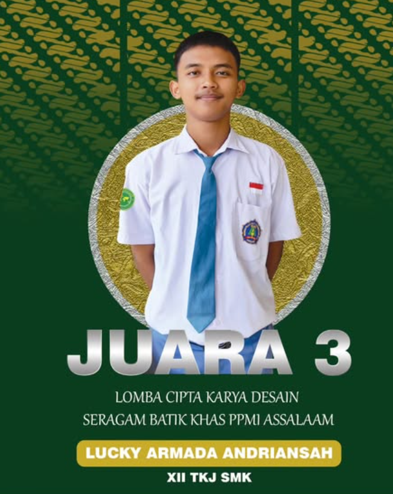
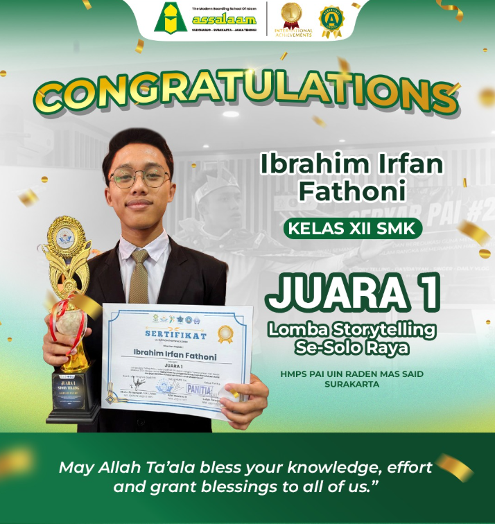

Profil Singkat
Mengenal SMK ASSALAAM lebih dekat
SMK ASSALAAM merupakan sekolah menengah kejuruan yang berada di lingkungan Pondok Pesantren Modern Islam Assalaam. Sekolah berfokus pada pengembangan kompetensi siswa di bidang Teknik Komputer dan Jaringan (TKJ), sekaligus membangun karakter dan kedisiplinan siswa.
Selengkapnya
Teknik Komputer dan Jaringan
Program keahlian TKJ membekali siswa dengan keterampilan merakit dan merawat komputer, membangun jaringan, hingga mengelola server.
Lihat jurusan TKJVideo Profil
Dokumentasi Profil singkat SMK ASSALAAM
Kegiatan Siswa
Berbagai kegiatan pembelajaran dan aktivitas siswa
Praktik Laboratorium
Siswa melakukan praktik teknologi dan jaringan di laboratorium.

Ekstrakurikuler
Mengembangkan bakat, minat, kedisiplinan, dan kerja sama.

Kegiatan Siswa
Kegiatan siswa sebagai bagian dari pengalaman belajar di sekolah.
Prestasi Siswa
Beberapa pencapaian siswa SMK ASSALAAM

Juara 3 LKS TKJ
Prestasi pada ajang Lomba Kompetensi Siswa bidang TKJ tingkat Kabupaten Sukoharjo.
TKJ 2026
Juara 3 Cipta Karya Desain
Prestasi siswa dalam Lomba Cipta Karya Desain tingkat Provinsi Jawa Tengah.
Non Akademik 2024
Juara 1 Storytelling
Prestasi siswa dalam bidang komunikasi dan kemampuan berbahasa.
Prestasi 2024